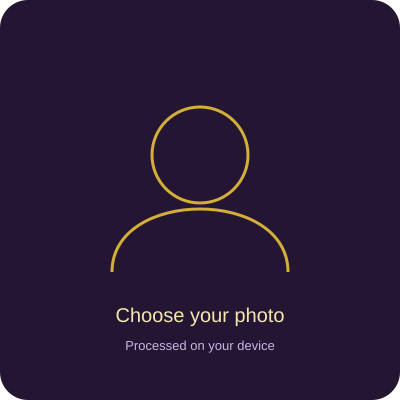

Loading…
Which billionaire is your closest face match?
Compare six facial proportions with 100 billionaires to see your Top 3 closest matches and standout feature.
Top 3 · six-feature breakdown · save/share result card

Free · no sign-up · your photo is processed locally and is not uploaded for face matching. A clear, front-facing photo works best.
We compare forehead height, eye spacing, nose length, mouth width, chin length, and face shape against the 100-person sample.
The theme is inspired by Korea’s face-reading tradition. The actual match is based on measured facial proportions, not predictions about wealth, personality, or future success.
For entertainment only. Facial features do not predict wealth, personality, or future success. Comparisons use AI-generated caricatures, not photographs of the people named.
Your face-match photo is processed locally and is not uploaded or stored by this site. Saving or sharing a result card is your choice.